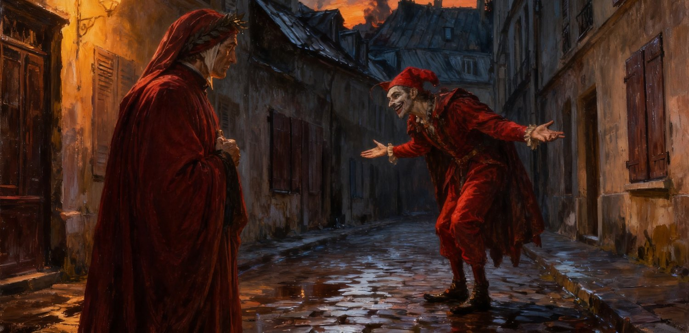

第一部分：魔鬼的邀请
巴黎的黄昏渐渐暗了下来。
远处，街垒上的枪声已经稀疏。硝烟仍然笼罩着古老的屋顶，街道两旁的窗户透出昏黄的灯光。
一个身穿鲜红色衣服的男人，正站在众人面前。
他有一张瘦削而狡黠的脸，嘴角挂着似笑非笑的神情。衣着像个小丑，姿态却像一位谦卑的仆人。

他刚刚向但丁张开双臂，亲热地喊道：
“老朋友，居然又见面了！”
但丁惊讶地望着这个陌生人。
他并不知道对方是谁，也不记得自己曾在哪里见过他。
可是，从那张狡黠的笑脸，尤其是那双闪烁着讥讽与恶意的眼睛里，他认出了一种无比熟悉的神情。
那是他曾在地狱中无数次见过的、魔鬼的神情。
但丁没有回答。
这时，珂赛特却高兴地走上前去。
“客人先生，您好！”
红衣人立刻收起那副戏谑的表情，恭恭敬敬地向她鞠了一躬。
“啊，亲爱的珂赛特小姐！能再次见到您，真是我的荣幸！”
珂赛特指着身后的众人，说道：
“先生，我想去找我的叔叔。”
“这些人都是我的朋友。他们刚刚帮助了我，还答应带我一起去见叔叔。”
“您以前说过，您有一条船，可以带我去找他。”
“现在，您能带我们一起去吗？”
梅非斯特听完，立刻张开双臂，脸上露出灿烂的笑容。
“当然没有问题！”
“再好不过了！”
他夸张地鞠了一躬。
“说来也巧，我正好也想去拜访您那位古怪的叔叔。”
“既然大家都要去同一个地方，结伴同行，岂不是更加方便？”
他忽然把目光转向但丁。
“况且，珂赛特小姐，您的这些朋友之中，还有我的一位老朋友呢。”
梅非斯特朝但丁眨了眨眼睛。
但丁冷冷地看了他一眼，没有说话。
花宝却有些害怕。
它不喜欢红衣人那张古怪的脸，更不喜欢他那双不停转动的眼睛。
它悄悄躲到尊者身后，只露出半个脑袋，偷偷打量着他。
朝云却没有像但丁那样沉默。
她径直走到梅非斯特面前。
“梅非斯特先生。”
“你究竟是谁？”
“为什么认识但丁？”
“你又究竟想对我们做什么？”
梅非斯特仿佛早就在等待这个问题。
他微微一笑，向朝云欠了欠身。
“啊，尊贵的夫人。”
“您问得真好。”
“可是，您怎么会不认识我呢？”
朝云皱起眉头。
梅非斯特摊开双手。
“你们认识上帝。”
“你们认识天使。”
他停顿了一下，脸上露出狡黠的笑容。
“那么，你们自然也应该认识我。”
朝云没有说话。
梅非斯特继续说道：
“我在这个世界上，有许多名字。”
“撒旦、魔鬼、诱惑……”
他一个一个数着，仿佛在向客人介绍自己获得过的荣誉称号。
“有人说我是邪恶的化身，有人说我是堕落的天使。”
“还有人说，我是世上一切不幸的根源。”
他无可奈何地耸耸肩。
“不过，这些都是别人给我起的名字。”
“至于我自己——”
梅非斯特把一只手放在胸前，深深鞠了一躬。
“我自始至终，只认为自己是人类的仆人。”
但丁皱起眉头。
梅非斯特接着说道：
“我从不教育人们，什么是对，什么是错。”
“因为那些事情，自然有上帝、天使、国王、教皇，还有像您这样的伟大诗人来做。”
他看了但丁一眼。
“我可没有那么崇高的理想。”
“我只是帮助人们，做他们自己想做的事情。”
“并且告诉他们，实现愿望需要付出什么代价。”
“仅此而已。”
他摊开双手。
“请诸位放心。”
“我是来帮忙的。”
“我从来没有做过任何人不想做的事情。”
朝云冷冷地看着他。
梅非斯特却继续笑着说道：
“至于你们不想做的事情，只要不请我帮忙就是了。”
“这不是很简单吗？”
他说完，仿佛觉得自己的解释已经无懈可击，满意地点了点头。
随后，他忽然指着朝云。
“您看，就像您刚才付给酒馆老板的那些法郎。”
朝云有些意外。
“法郎？”
“是的，法郎！”
梅非斯特高兴起来。
“它可以帮助您实现愿望。”
“您想救出珂赛特小姐，便把法郎交给酒馆老板。”
“老板想得到更多的钱，便高高兴兴地收下那些法郎。”
“你们的愿望不同，可是法郎都帮助了你们。”
梅非斯特伸出一根手指，轻轻摇了摇。
“而且，法郎从来不问，谁对谁错。”
他又深深鞠了一躬。
“我也是如此。”
“我能够帮助人们实现愿望。”
“但我从不问谁对谁错。”
“所以，好人喜欢我，坏人也喜欢我。”
梅非斯特说到这里，忍不住得意地笑了起来。
仿佛这是一件值得骄傲的事情。
但丁冷冷地望着他。
朝云仍然没有放松警惕。
梅非斯特却忽然换了一副亲切的神情。
“不过，诸位今天来找我，并不是为了讨论这些无聊的问题吧？”
他望向珂赛特。
“我们亲爱的小姐，是想去见她的叔叔。”
“而诸位——”
他转向但丁与朝云。
“如果诸位是想去追寻那似水的年华……”
梅非斯特忽然笑了。
“我正好也想去。”
他张开双臂。
“而且，真是巧得很！”
“我正好有一条船，可以驶往巴尔贝克。”
“而你们正好有珂赛特小姐，可以为我们引路。”
他看看众人，又看看珂赛特。
“这岂不是再好不过了吗？”
“我们合作一下，不就好了？”
梅非斯特向前走了一步，神情忽然变得认真起来。
“当然，我也有一个小小的条件。”
朝云立刻警觉起来。
“什么条件？”
“很简单。”
梅非斯特举起一只手。
“只要诸位一路上，不再向我提出新的要求。”
“我也不会索要任何额外的代价。”
“我提供船，珂赛特小姐负责引路。”
“我们一起去见她的叔叔。”
“仅此而已。”
他又露出讨好的笑容。
“我想，这已经是一份再公平不过的约定了。”
珂赛特听完，高兴极了。
她上前一步，向梅非斯特行了个礼。
“谢谢您，梅非斯特先生！”
“您真是一位好心的先生！”
梅非斯特立刻弯下腰，郑重地回礼。
“能够为您效劳，是我的荣幸，亲爱的小姐。”
朝云看着他，缓缓说道：
“梅非斯特先生。”
“请你务必信守自己的承诺。”
“我们不向你提出额外的要求，你也不得向我们索取额外的代价。”
梅非斯特把手按在胸前。
“当然，尊贵的夫人。”
“我向来十分重视约定。”
尊者一直没有说话。
他弯下腰，抱起花宝，又伸出手，轻轻牵住珂赛特。
花宝依偎在尊者怀里，望着自己的新朋友。
珂赛特握住尊者的手，脸上露出了期待的笑容。
她还从来没有乘过船。
更没有去过一个叫巴尔贝克的地方。
她想象着大海、沙滩、那栋有老式电梯的大房子，还有那位终日望着窗外、脾气古怪的叔叔。
她不知道那里究竟是什么样子。
但她已经开始期待这趟旅行。
但丁却没有向前走。
他站在原地，冷冷地望着梅非斯特。
“梅非斯特。”
“无论你说得多么动听，终究骗不了我。”
梅非斯特转过头。
但丁继续说道：
“我曾经走过地狱。”
“我见过那些因贪婪、欺骗和背叛而受苦的灵魂。”
“也见过那些被囚禁在地狱最深处的魔鬼。”
他望着梅非斯特的眼睛。
“他们往往就是你这副模样。”
“满口仁慈、忠诚与公正，仿佛所做的一切都有合情合理的理由。”
“可是——”
但丁的声音渐渐严厉起来。
“后来那些巨大的灾难，最初往往都起源于一个看起来合情合理的理由。”
梅非斯特听完，不但没有生气，反而笑得更加开心。
他向但丁夸张地鞠了一躬。
“啊！亲爱的但丁先生！”
“您说得真好！”
“真不愧是写出《神曲》的伟大诗人！”
他抬起头，笑眯眯地问：
“不过，那又怎么样呢？”
但丁没有回答。
梅非斯特继续说道：
“如果我注定要被永远关在地狱里——”
“或者，我原本就已经身在地狱——”
他摊开双手，露出无可奈何的神情。
“那么，您又能把我怎么样呢？”
但丁冷冷地盯着他。
梅非斯特却像在讲一个有趣的笑话，继续说道：
“当然，您完全可以拒绝我的邀请。”
“我绝不会勉强您。”
他微微弯腰，做出请便的姿势。
“如果您不愿意与我同行，大可以去找您的老师——维吉尔。”
但丁听到维吉尔的名字，神情微微一变。
梅非斯特却越说越高兴。
“然后，您就可以带着这群朋友，飞越无边无际的大海。”
“再去攀登海边那些陡峭的悬崖。”
“当然，还要背负着沉重的负担。”
他煞有介事地弯下腰，做出背着巨大行囊、艰难攀登的样子。
“一步，一步，又一步……”
“也许要花上几百年的时间，才能终于爬到山顶。”
他直起身，擦了擦并不存在的汗水。
“啊，多么伟大的旅程！”
“多么崇高的牺牲！”
梅非斯特忽然抬起手，指向天空。
“也许，历经千辛万苦之后，你们终于能够见到上帝。”
他停顿了一下，耸耸肩。
“当然，也许根本见不到。”
但丁皱起眉头。
梅非斯特却低头看向珂赛特。
女孩正仰着脸，困惑地听着两人的对话。
“可是，亲爱的但丁先生。”
“无论您最终是否见到了上帝——”
梅非斯特脸上的笑容忽然变得温柔起来。
“那都不能帮助这位可怜的小姑娘，找到她的叔叔。”
但丁一时没有说话。
梅非斯特也不再大笑。
他望着但丁，忽然换了一种近乎诚恳的语气。
“而且，但丁先生，请相信我。”
“您一定会和我一样，非常想见到珂赛特的叔叔。”
他停顿片刻。
嘴角又浮现出那种狡黠的笑容。
“或者——”
“您会比我更想见到他。”
但丁抬起眼睛。
“为什么？”
梅非斯特没有立刻回答。
他只是望着但丁，仿佛正在欣赏一件自己早已知道结局、却仍然觉得有趣的事情。
过了一会儿，他轻轻说道：
“亲爱的但丁先生。”
“难道您不想再见一见——”
“记忆中的贝雅特丽齐吗？”
但丁猛地抬起头。
夜风吹过巴黎的街道。
远处最后几声枪响，已经消失在暮色之中。
梅非斯特望着但丁，脸上的笑容渐渐收敛。
他向前走近一步。
声音很轻。
“还有……”
他停顿了片刻。
“曾经真正的您自己。”
但丁怔住了。
他望着眼前这位身穿红衣、笑容狡黠的魔鬼。
梅非斯特不再说话。
仿佛他已经知道，自己不必再说什么了。
街道陷入了沉默。
《寻找似水年华》第一部分完。